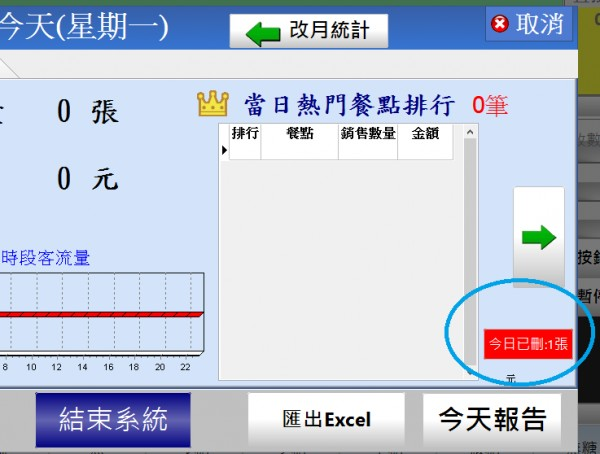
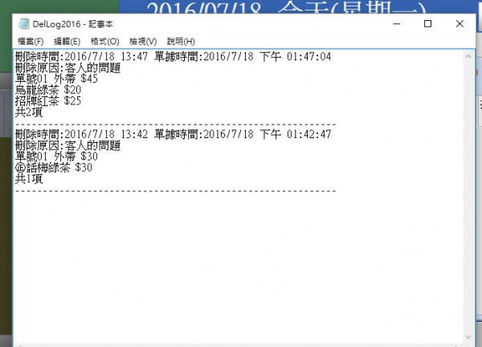

可否在按下"刪單"的時候出現警告音效.
1 個回答
您好
1.已加入按下刪除時 發出系統提示音,如要進行刪除 必須點選刪除原因
2.當發生刪除單據時,在打烊時 下方會出現

按下後 會出現刪除單據的時間內容

藉由以上機制 應可防範 一些刻意的砍單
您好
1.已加入按下刪除時 發出系統提示音,如要進行刪除 必須點選刪除原因
2.當發生刪除單據時,在打烊時 下方會出現

按下後 會出現刪除單據的時間內容

藉由以上機制 應可防範 一些刻意的砍單